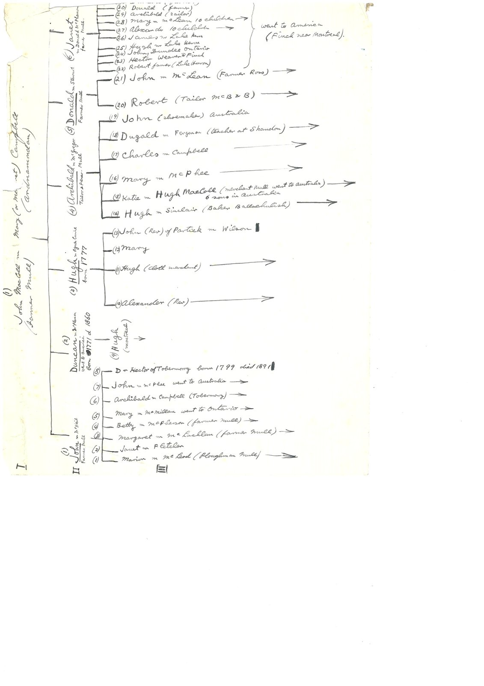
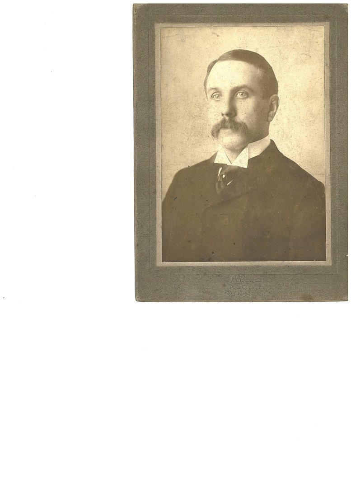
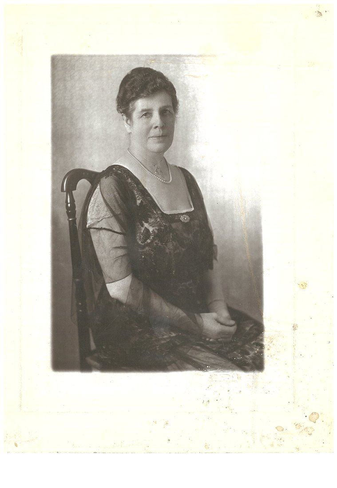

<meta charset="utf-8">
<meta name="viewport" content="width=device-width, initial-scale=1">
<meta name="robots" content="noindex">
<title>MacColl: Mull to the Mills</title>
<link rel="stylesheet" href="style.css">

<nav>
  <a href="index.html">Home</a>
  <a href="quintanilla.html">Quintanilla</a>
  <a href="martinez.html">Martinez</a>
  <a href="flynn.html">Flynn</a>
  <a class="here" href="maccoll.html">MacColl</a>
</nav>

<main>
<h1>MacColl</h1>
<p class="sub">My father's mother's line. A tailor's son out of Glasgow who ran a Rhode Island mill empire for fifty years, from a Highland family that kept every scrap of paper.</p>

<h2>The tailor and the tycoon</h2>
<p>The line starts, as far as the print record currently reaches, with <strong>Hugh MacColl, a tailor in Glasgow, 1813-1882</strong>, whose family was originally from the <strong>Isle of Mull</strong> in the Scottish Highlands <span class="badge proven">Proven</span>. He married <strong>Janet Roberton</strong> in Glasgow on September 13, 1849, and the original marriage certificate still exists, which I'll get to, because where it lives is the best find on this whole line. They raised a big family in the Tradeston district of Glasgow, and their kids scattered impressively: one son founded a marine engineering firm in Sunderland, two became ministers, one of those ending up at a major Philadelphia church.</p>

<p>And one, <strong>James Roberton MacColl</strong>, born April 2, 1856 in Glasgow, got on a ship <span class="badge proven">Proven</span>. Educated at Glasgow schools, trained in the textile trade, he visited America in 1881, met the Sayles brothers who were launching a new mill, and came back for good in 1882 as manager of the <strong>Lorraine Mills</strong> in Pawtucket, Rhode Island. He ran Lorraine for essentially the next fifty years: agent, treasurer, then president. He married a Glasgow girl, <strong>Agnes Bogle</strong>, in 1884, and they raised six children in Rhode Island, sons who went to Harvard and Princeton and into the mills.</p>

<p>He became a genuinely big deal in American textiles: president of the National Association of Cotton Manufacturers, chairman of the 1919 World Cotton Conference, a bank president on the side, head of Rhode Island's British war-relief effort in World War I. When he died at home in Providence on November 23, 1931, the trade press ran his obituary with a portrait. The tailor's son from Tradeston died a Yankee industrialist. And here's a strange echo: the Flynn line's Donald and the MacColl line's James, the two great figures of my dad's two sides, died five weeks apart in the fall of 1931, one at 33, one at 75. Their descendants married each other twenty-two years later.</p>

<h2>Down to my grandmother</h2>
<p>James's son <strong>Norman Alexander MacColl</strong>, born 1895 in Warwick, Rhode Island <span class="badge proven">Proven</span>, married <strong>Mary Kimbark</strong> of Evanston, Illinois in 1924. The Kimbarks were a prominent early-Chicago family, there's a Kimbark Avenue in Hyde Park, and Mary's father, a paper-company founder, was president of the Chicago Association of Commerce; her brother was later mayor of Evanston. Norman and Mary's daughter <strong>Joan MacColl</strong>, born in Providence in 1930, is my grandmother. She married Donald White Flynn Jr. in 1953, and when he died young in 1973 she later remarried. She died in 2013 and is buried with Donald and their son John at Glenwood Cemetery in East Greenwich <span class="badge proven">Proven</span>.</p>

<figure>
  
  <figcaption>My grandmother Joan, Glenwood Cemetery, East Greenwich, Rhode Island.</figcaption>
</figure>

<p>And here is the real crown on this branch, bigger than the family knew it. Through that Kimbark marriage, my father's line runs straight back to <strong>Richard Warren, a passenger on the Mayflower in 1620</strong> <span class="badge proven">Proven</span>. The descent goes Warren, to his daughter Elizabeth, into the Church family, then into the old Massachusetts <strong>Rice family</strong>, down to Mary Louise Rice, who married Eugene Underwood Kimbark, whose daughter <strong>Mary Kimbark</strong> married Norman MacColl, whose daughter was my grandmother Joan. The General Society of Mayflower Descendants already has this line documented and approved down to Mary Kimbark, through a relative's application; I'm finishing the last stretch, Joan down to my own son, to join in my own right. So the deep colonial-American names on this side, Rice and Church and Warren, don't just run to the 1600s, they run to the Mayflower itself.</p>

<p>One rung past the Mayflower is even reachable. Richard Warren's wife, Elizabeth Walker, had a father, <strong>Augustine Walker of Great Amwell in Hertfordshire</strong>, and his own 1613 will survives and names "my daughter Elizabeth Warren wife of Richard Warren." That is a real English record putting a proven ancestor at roughly 1550 <span class="badge proven">Proven</span>. Past Augustine, though, the trail honestly ends: Richard Warren's own parents have never been found by anyone, the Rice line stops cold at the immigrant Edmund Rice, and the "London ancestry" that floats around online for the Church side is a known forgery, which I have deliberately left off this page. On this branch the Mayflower is the floor, with Augustine Walker one honest step below it.</p>

<p>And the Kimbarks carry a <em>second</em> deep line, this one running back across the Atlantic the other way. The surname is German. The family descends from <strong>Johann Matthias "Theiss" Gimberg</strong>, who married at <strong>Neuwied on the Rhine in 1719</strong> and, in 1726, petitioned the local prince for permission to emigrate to America, his actual petition papers still filed in the Neuwied archive today. He crossed that year, joined the Reformed church in New York City, and settled up the Hudson in Orange County, where over three generations the name drifted from Gimberg to Kimberg to Kimbark. His father, <strong>David Gimberg of Stein near Beilstein</strong>, is named one generation deeper still, a man living in the late 1600s, and the Neuwied church registers that record this family run back to 1667 <span class="badge proven">Proven</span>. So this branch reaches a full century deeper than Mary Kimbark's Chicago family, into 1600s Germany. The one soft spot is the weld: the link from my documented Chicago Kimbarks, up through Mary's grandfather Adam Kimbark, born 1798 in upstate New York, to that colonial immigrant is published by the genealogist who worked it as a "Proposed Ancestry," so I grade that specific connection <span class="badge probable">Probable</span>. The German family is proven; that my own line ties into it is the near-certain but not-yet-nailed part.</p>

<figure>
  
  <figcaption>Who's Who in Chicago, 1917. The Kimbark entry: son of Daniel Avery Kimbark and Eliza Underwood, married Louise Rice, six children ending with Mary, my great-grandmother.</figcaption>
</figure>

<h2>The family that kept everything</h2>
<p>Now the find. Most families keep a shoebox. The MacColls kept an archive. Sixteen linear meters, over fifty feet of shelf, of family papers spanning 1811 to 1974 sit today in the <strong>Lochaber Archive Centre in Fort William, Scotland</strong>, collected by James's own nephew and the Clan MacColl Society, catalogued professionally as collection GB3218 L/D73 <span class="badge proven">Proven</span>. (The catalogue confirms the family's origin too, in its own words, "originally from Mull.") The 103-page catalog is free, and it's embedded below. Inside the collection:</p>

<p>The original 1849 marriage certificate of Hugh and Janet. Hugh's courtship letters to her. Janet's handwritten recollections of her father's last days, which hand us another generation, and this time the census nails it down cold. Her father was <strong>James Roberton, born about 1795 in Stirlingshire</strong>, Scotland's old iron country, who came to Glasgow and ran the <strong>Gorbals Iron Foundry</strong>, and her mother was <strong>Janet Bankhead</strong>, whom James married in 1825. This is no longer just family lore: the 1851 census lists James Roberton, iron founder employing 52 men, living on Main Street in the Laurieston end of the Gorbals, the 1894 Glasgow history <em>Glimpses of Old Glasgow</em> names "the much-esteemed Bailie Roberton" as proprietor of that very foundry on Malta Street, and the old post-office directories confirm the firm Roberton &amp; Wilson, ironfounders, trading in the Gorbals into the 1860s <span class="badge proven">Proven</span>. Their daughter Janet, baptised in the Gorbals in 1826, is the one who married Hugh the tailor in 1849, so she married a step down from foundry-owning, magistrate stock. (One thing the records corrected: the family remembered her mother as "a Janet from Dunoon," but the church register gives her maiden name as Bankhead; a Dunoon origin for the Bankheads is plausible but not yet proven. An earlier John Roberton, engineer, shows up in the Glasgow directories as far back as 1816, and the archive's records now put flesh on him: John Roberton, engineer of Tradeston, husband of Janet Ralph, whose daughter Elizabeth's 1875 death record is among the scans. He is very likely James the iron founder's own father, which would carry the Robertons back one more generation <span class="badge probable">Probable</span>.) Six photographs of James R. MacColl and his family in Providence. His correspondence home from Rhode Island through 1942. And the jackpot item: a genealogical tree of the whole family <em>compiled by James R. MacColl himself</em>, from data supplied by a Dr. Hector MacColl of Tobermory, on Mull.</p>

<p>And now that rung is proven. The Lochaber archive sent the actual scans, and they settle the question the family had puzzled over for a century. Above Hugh the tailor stood his father, another <strong>Hugh MacColl, born 1777, a Glasgow clothier and tailor, who married Agnes Currie</strong> <span class="badge proven">Proven</span>. Two death records nail them down: "Ann [Agnes] Currie, wife of Hugh McColl Senr, clothier," who died in 1844 aged 64, and "Hugh McColl, tailor, 3 Germiston Street," who died in 1852 aged 74. And the compiled tree reaches one generation further still, to <strong>John MacColl, a farmer on the Isle of Mull, and his wife Margaret Campbell of Ardnamurchan</strong> <span class="badge probable">Probable</span>, whose six children, born in the 1770s, scattered from Mull to Glasgow to Canada and Australia. So the Highland line now runs, on the family's own papers, back into the mid-1700s.</p>

<figure>
  
  <figcaption>The "MacColls of Mull" tree, drawn up by James R. MacColl from information supplied by Dr. Hector MacColl of Tobermory (himself born 1799). At the head, John MacColl and Margaret Campbell of Ardnamurchan; their son, listed "(3) Hugh m. Agnes Currie, born 1777," is the tailor's father. Lochaber Archive Centre, GB3218 L/D73.</figcaption>
</figure>

<p>The Currie family reaches back a little further too: buried in the same Glasgow churchyard lair are an <strong>Alexander Currie, who died in 1806 aged 64</strong>, and a Mrs. Currie who died in 1818 aged 70, the older generation behind Agnes <span class="badge probable">Probable</span>. And the archive gave up something no register can: <strong>faces</strong>.</p>

<figure>
  
  
  <figcaption>Two of the six family photographs in the collection. The gentleman was photographed in Pawtucket, Rhode Island, and is almost certainly <strong>James Roberton MacColl</strong> himself, the tailor's son who ran the Lorraine Mills; the seated woman is one of the MacColl women of his household, most likely his wife Agnes Bogle. The first faces on this whole line.</figcaption>
</figure>

<p>The scans also handed over the human stuff: Hugh's courtship letters to Janet before their 1849 wedding, a letter to Janet from her own mother in Dunoon in 1851, and Janet's tender "Recollections of my beloved father," James Roberton the iron founder, "who died 19th November 1868 aged 74 years," exactly matching his death record. Two centuries of a family, in one box in the Highlands.</p>

<h2>The paper trail</h2>
<ul class="docs">
  <li><a href="documents/maccoll-finding-aid.pdf">The MacColl papers: full 103-page catalog (PDF)</a><span class="doc-what">Every item in the family's 16-meter archive at the Lochaber Archive Centre, Fort William, described. The 1849 certificate, the courtship letters, the family tree James compiled himself.</span></li>
  <li><a href="documents/maccoll-mull-tree.jpg">The "MacColls of Mull" family tree (archive scan)</a><span class="doc-what">James R. MacColl's own compiled tree, from Dr. Hector MacColl of Tobermory. Names John MacColl and Margaret Campbell of Ardnamurchan at the head, and Hugh married to Agnes Currie (born 1777) as the tailor's parents.</span></li>
  <li><a href="documents/maccoll-1849-marriage-cert.jpg">Hugh MacColl and Janet Roberton, 1849 marriage record</a><span class="doc-what">The Gorbals proclamation and marriage, September 1849, one of the papers scanned from the Fort William archive.</span></li>
  <li><a href="https://archive.org/details/sim_textile-world_1931-11-28_80_22">Textile World, November 28, 1931: James R. MacColl's obituary, with portrait</a><span class="doc-what">Died November 23, 1931 at home in Providence. Fifty years at Lorraine, the whole career, in the industry's own paper.</span></li>
  <li><a href="https://www.electricscotland.com/history/descendants/chap82.htm">"Scots and Scots' Descendants in America": his biography chapter</a><span class="doc-what">Born Glasgow, April 2, 1856; parents Hugh and Janet; the 1882 crossing. Published while he was alive to check it.</span></li>
  <li><a href="https://www.rihs.org/mssinv/Mss006sg18.htm">Lorraine Manufacturing Co. records, Rhode Island Historical Society</a><span class="doc-what">The mill's own archive. MacColls ran it from February 1882 until it closed in 1953.</span></li>
  <li><a href="https://ancestors.familysearch.org/en/K233-NGF/james-roberton-maccoll-sr-1856-1931">James Roberton MacColl Sr., 36 attached records</a><span class="doc-what">Passports, censuses, the Rhode Island births of his children.</span></li>
  <li><a href="https://archive.org/details/whoswhoinchicago00leon_1">Who's Who in Chicago, 1917: the Kimbark entry</a><span class="doc-what">My great-great-grandfather Eugene Underwood Kimbark: paper-company founder, Chicago Association of Commerce president, six children ending with Mary, my great-grandmother.</span></li>
  <li><a href="https://www.findagrave.com/memorial/247431836/joan-flynn_brennan">Joan MacColl Flynn Brennan, 1930-2013</a><span class="doc-what">My grandmother, linked grave to grave to her parents, husband, and son.</span></li>
</ul>

<h2>Still hunting</h2>
<p>The Scottish civil registration of James's 1856 birth as backup. Norman's 1988 obituary. And the last vital records to finish my own Mayflower application, my grandmother Joan down to my son, joining the line the Kimbarks already carried back to Richard Warren.</p>
<p>Two threads would each push a wall back. On the Roberton side, James the iron founder's 1868 death record is now in hand from the archive; confirming whether his father was that John Roberton, the Tradeston engineer, would carry the line back another generation and toward the Stirlingshire registers of the mid-1700s. And on the German side, the Beilstein-area church registers, one archive up the Rhine from Neuwied, are where the Gimberg/Kimbark male line would push past David Gimberg into the 1600s and earlier.</p>

<div class="footer"><p><a href="index.html">Back to all four lines</a></p></div>
</main>
